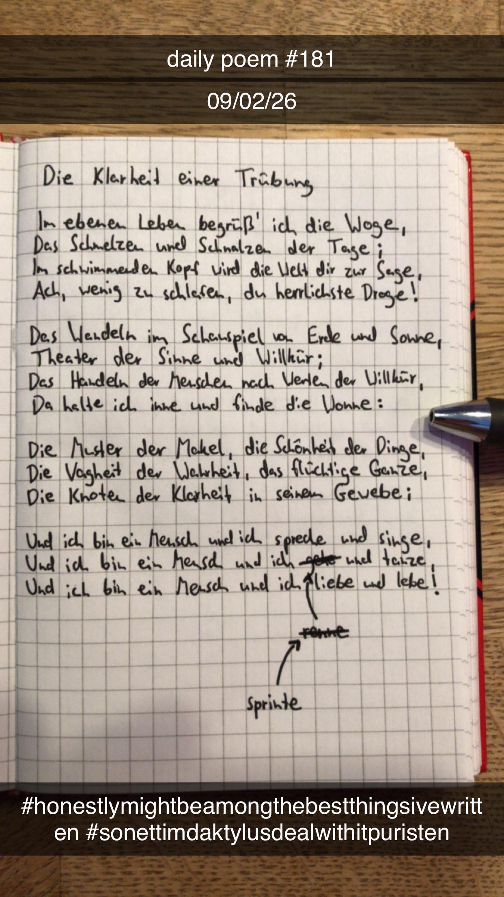

Die Klarheit einer Trübung
[181]Im ebenen Leben begrüß' ich die Woge,
Das Schmelzen und Schnalzen der Tage;
Im schwimmenden Kopf wird die Welt dir zur Sage,
Ach, wenig zu schlafen, du herrlichste Droge!
Das Wandeln im Schauspiel von Erde und Sonne,
Theater der Sinne und Willkür;
Das Handeln der Menschen nach Werten der Willkür,
Da halte ich inne und finde die Wonne:
Die Muster der Makel, die Schönheit der Dinge,
Die Vagheit der Wahrheit, das flüchtige Ganze,
Die Knoten der Klarheit in seinem Gewebe;
Und ich bin ein Mensch und ich spreche und singe,
Und ich bin ein Mensch und ich sprinte und tanze,
Und ich bin ein Mensch und ich liebe und lebe!

Anmerkungen
Man könnte zwar irgendwo auch argumentieren, dass mein Schlafrhythmus einfach sehr verschoben ist und ich die Nacht sozusagen durchgemacht habe, aber eigentlich stimmt das auch nicht und so oder so ist dieses Gedicht in meiner Assoziation jetzt schon zurecht mit einem Morgen bzw. Vormittag verbunden. Ich habe kurz überlegt einfach ein weiteres zu schreiben und das dann für den voherigen Tag zu "loggen", aber das hätte sich auch falsch angefühlt und wäre disingenuous gewesen. Somit bin ich zu dem Schluss gekommen, dass meine Streak wohl leider nun gerissen ist, ich als Kompromiss aber für heute zwei Gedichte schreiben werde.
edit: nah, fuck that, this counts for the 8th i dont care, i've stopped being so rigid about this anyway; as long as there's 365 poems in a year i dont care too much if sometimes ive technically written two on one and none on another